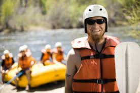
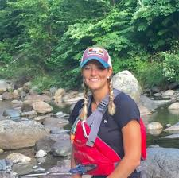
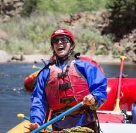

Todd
Todd is one of our longest tenured guides of 13 years. Although he might not be the kindest, he is our first choice for experienced and knowledgable river guides. Todd is available March-September, Thursday-Monday.
Natalie
Natalie has been guiding river groups for over 8 years, but before this, she worked as a park ranger in the nearby national forest. Our leading expert in nature will show you everything there is to know about this unique ecosystem. Natalie is available May-August, Friday-Sunday.
Emily
Emily has over 4 years of river guiding experience under her belt, and another 4 years studying how to become a doctor. If her love for the river is strong enough for her to drop out, we're sure it is strong enough to show you everything there is to know on the Snake River. Emily is available March-October, Monday-Friday.
